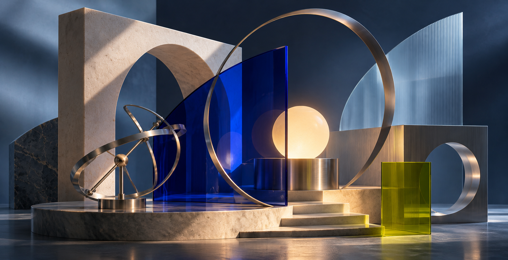
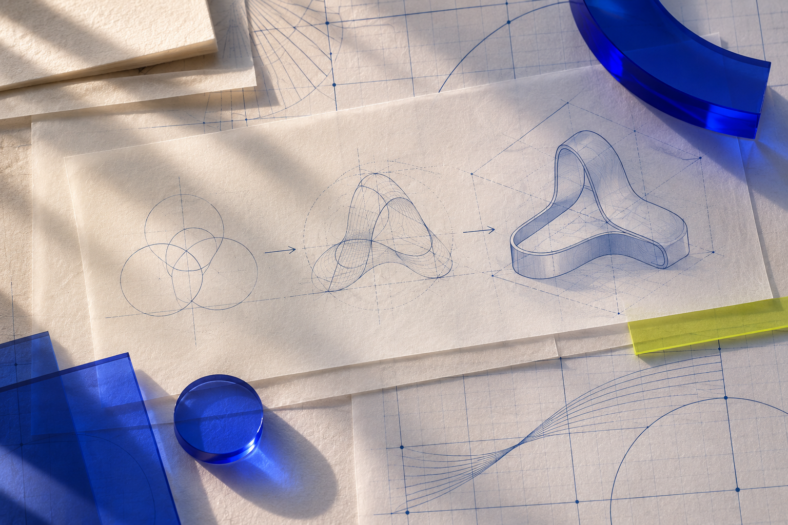

Ideas in
the making.
An atelier for ideas, technology and exploration. A home for experiments, thoughtful tools and new ways of seeing.
↓
Ideas made
tangible.
Decision Recheck
An open-source toolkit for checking product promises against requirements and evidence.
IntentWeft
Exploring intent, evidence and verification in AI-assisted code changes.
Sheet Sentry
Compare spreadsheets and formulas after AI edits.
CutOnce
Rectangular cutting layouts for irregular material.
Agent Crash Lab
Simulating failures and recovery in AI workflows.
Handrail
A browser extension that guides user actions.
Ideas evolve and new work takes shape. Explore more on GitHub.
Explore all projects ↗A question.
A new possibility.
Exploration turns an idea into something you can see, test and build on.

Curiosity is
a practice.
Idea Foundry brings together experiments in software, digital products and practical tools. Each project starts with a question, then takes shape through exploration and making.
Let's start
with an idea.
For new ideas and meaningful collaboration, connect on LinkedIn.
Connect on LinkedIn